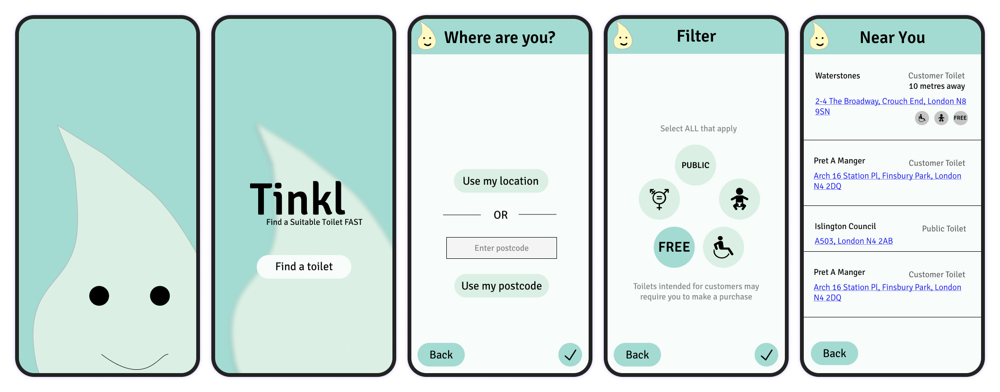
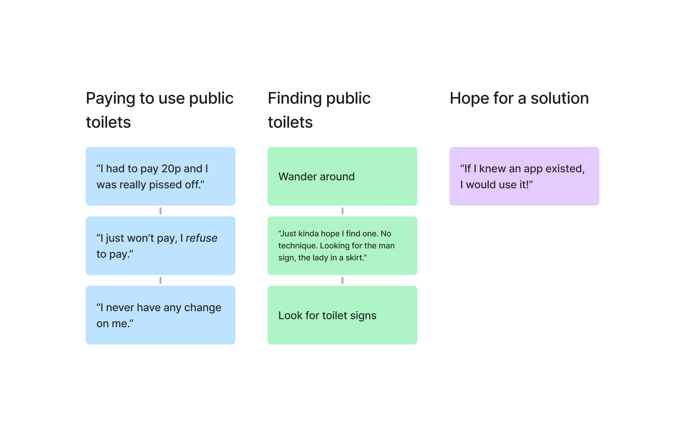
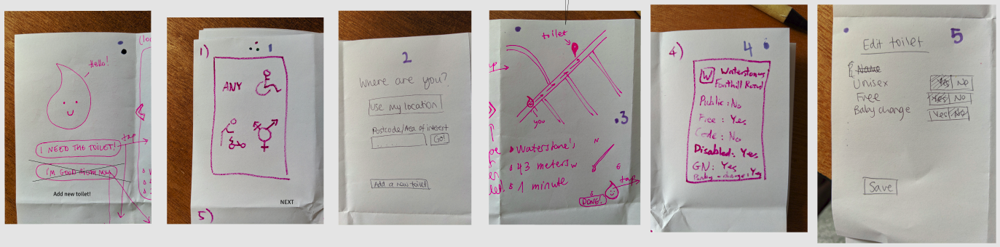
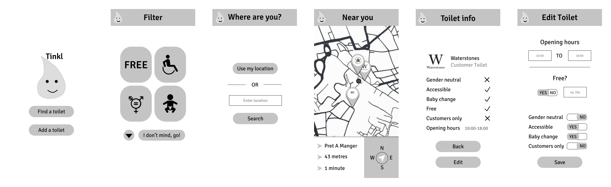
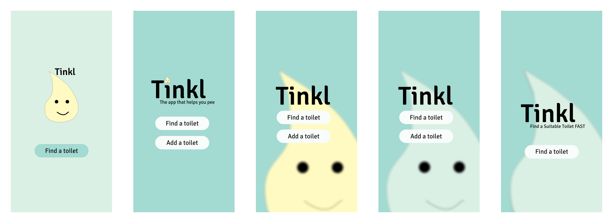

A progressive web app to help you find a suitable toilet fast when you're out and about in London.
3 weeks in May 2019: a one-week design sprint, and two one-week development sprints.
Drinking the recommended 2 litres of water a day means you need to use the toilet often. It can be especially inconvenient when you're out in the city and away from a toilet. It would be nice if you could track down the nearest public toilet, whether it be a McDonald's, a portapotty, or a free museum. An added bonus would be if the app could tell you how much the toilet costs if not free, and give it a cleanliness rating.
Provide users with a quick and easy way of finding the nearest public toilet.
I was the UX/UI Lead in a team of 4 (other roles were Scrum Master, Operational Developer, Quality Assurance Lead). I was in charge of finalising the app's visual identity and always advocating for the user when deciding about functionality.
We brought this project to life during my time at Founders and Coders. An external product owner came to us with the problem, and our cross-functional team of four used agile methodologies and followed the double diamond design process to create an MVP which solves this problem.
We designed and built a PWA, which was live for three years.
We conducted interviews with 4 Londoners who often walk the streets of the city. We wanted to understand what they do if they need the bathroom when they are out. We also wanted to learn about their attitudes to public toilets.
We learned that each person had encountered the problem we were trying to solve. They did not have a tried and tested solution to find a bathroom to use when they are out in the city, which made some of them anxious. They also felt strongly about places charging people to use their bathroom.
We researched other public toilet finders. We found a couple of apps, but their design was very cluttered. The data displayed was not consistent as a result of it being open sourced. We knew that we had to create a simple and clean user interface with consistent data forms.
Main user journey: As a user, I want to find my closest suitable toilet ASAP when I’m out and about in London.
User stories:
The team did a Crazy Eights exercise to brainstorm ideas for the journey's different screens. We agreed to implement the following screens.
We then transferred the designs into Figma, and created a prototype for user testing.
We used a low-fidelity prototype on Figma to test the app with real users.
Study type: moderated usability study
Location: UCL campus, central London
Participants: 10 passers-by
Incentive: we gave out lollipops and jokes to participants
We received a lot of positive feedback on the concept. Having experienced the issue we were trying to solve themselves, every participant said they would definitely use the app if it existed.
We received some constructive feedback on the user experience of the prototype. People found the toilet pages with the list of amenities a bit excessive and did not like the chekmark/X system. They also found the toggle switch on the "Edit toilet" screen confusing.
We had very little time, so we decided to have a very focused approach to the visual design. We wanted to evoke a safe and clean bathroom feeling with the help of colours, so we opted for a soft teal and blue with an off-white background base.
The app needed a logo. We had a lot of fun playing around with it (even in the very short amount of time we had), and settled on a droplet: a recurring motif in one's journey to the washroom. After some heated arguments, we decided on a more sophisticated and tasteful blue droplet to be the main mascot. The yellow variant still managed to somehow sneak into the designs, and add a little colour to the header.
Here are a few of the landing screen designs. The last one is the final version: the outline of the droplet is blurred, giving the screen a more subtle vibe (also making it look more professional—we did not have the time or resources to draw a high quality logo). We also got rid of the face, which helped the app feel less tacky.
Time constraints meant we had to scale back the functionality: we had to stick with the bare minimum for the MVP. The app will help you find a suitable toilet near you, but you will not be able to edit or add any toilets. This also solved the toggle switch issue we discovered during the first round of usability testing.
Once we had our high-fidelity designs, we spent a week and a half building the app. At the end of the build sprints, we took our functioning app for a second round of usability testing.
Users still loved the concept and were very excited that a toilet finder app exists.
Participants struggled to recognise links on the "Near you" screen. These links take the user to Google Maps and show them the directions to each toilet.
Participants found certain phrases in the app confusing. They did not know what a "public" toilet actually meant, and most of them were taken aback by the "Likely free" tag we added to toilets where our data did not suggest a fee but we could not be sure it was completely free.
The app was live and accessible to anyone for three years, after which our hosting site switched to paid tiers, which we decided not to pay for. We may come back to Tinkl one day and move it to another hosting service. If this happens, we shall tackle the feedback we received during our second usability testing session. We received overwhelmingly positive feedback from users, so I do hope the app will go live again.